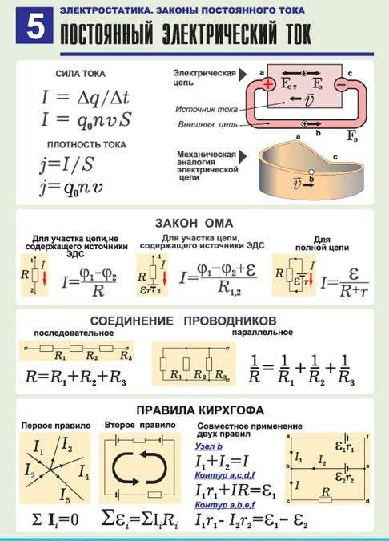

1.1.5. Законы постоянного тока. Закон Ома
Электрический ток — упорядоченное нескомпенсированное движение свободных электрически заряженных частиц, например, под воздействием электрического поля. Такими частицами могут являться: в проводниках — электроны, в электролитах — ионы (катионы и анионы), в газах - ионы и электроны, в вакууме при определенных условиях - электроны, в полупроводниках — электроны и дырки (электронно-дырочная проводимость).
Различают постоянный (англ. direct current, DC) и переменный (англ. alternating current, AC) ток.
Постоянный ток — ток, направление и величина которого слабо меняется во времени. Переменный ток — это ток, направление и величина которого меняется во времени.

Сила тока
Силой тока называется физическая величина, равная отношению количества заряда, прошедшего за некоторое время через поперечное сечение проводника, к величине этого промежутка времени. Сила тока в системе СИ измеряется в Амперах (A). 1 А - это 1 Кулон за 1 секунду.
Рис.1.2. Участок электрической цепи.
По закону Ома сила тока I пропорциональна приложенному напряжению U и обратно пропорциональна сопротивлению проводника R:
Напряжение
Напряже́ние (U) между точками A и B электрической цепи или электрического поля — отношение работы электрического поля при переносе пробного электрического заряда из точки A в точку B к величине пробного заряда. Напряжение измеряется в Вольтах (V)
Сопротивление
Сопротивление (R) — основная электрическая характеристика проводника, измеряется в Омах (Om). 1 Ом - это сопротивление проводника с разностью потенциалов на его концах в 1 В и силой тока в нем 1 А.
Мощность
При наличии тока в проводнике совершается работа против сил сопротивления. Эта работа выделяется в виде тепла. Мощностью тепловых потерь называется величина, равная количеству выделившегося тепла в единицу времени. Согласно закону Джоуля – Ленца мощность тепловых потерь в проводнике пропорциональна силе протекающего тока и приложенному напряжению:
Мощность измеряется в Ваттах (W) . (См. справочник)
Электродвижущая сила (ЭДС) — физическая величина, характеризующая работу сторонних (непотенциальных) сил в источниках постоянного или переменного тока. В замкнутом проводящем контуре ЭДС равна работе этих сил по перемещению единичного положительного заряда вдоль контура. ЭДС можно выразить через напряжённость электрического поля сторонних сил (Eex). ЭДС так же, как и напряжение, измеряется в вольтах. Можно говорить об электродвижущей силе на любом участке цепи. Это удельная работа сторонних сил не во всем контуре, а только на данном участке. ЭДС гальванического элемента есть работа сторонних сил при перемещении единичного положительного заряда внутри элемента от одного полюса к другому. Работа сторонних сил не может быть выражена через разность потенциалов, так как сторонние силы непотенциальны и их работа зависит от формы траектории. Так, например, работа сторонних сил при перемещении заряда между клеммами тока вне самого источника равна нулю.
Для конспекта
